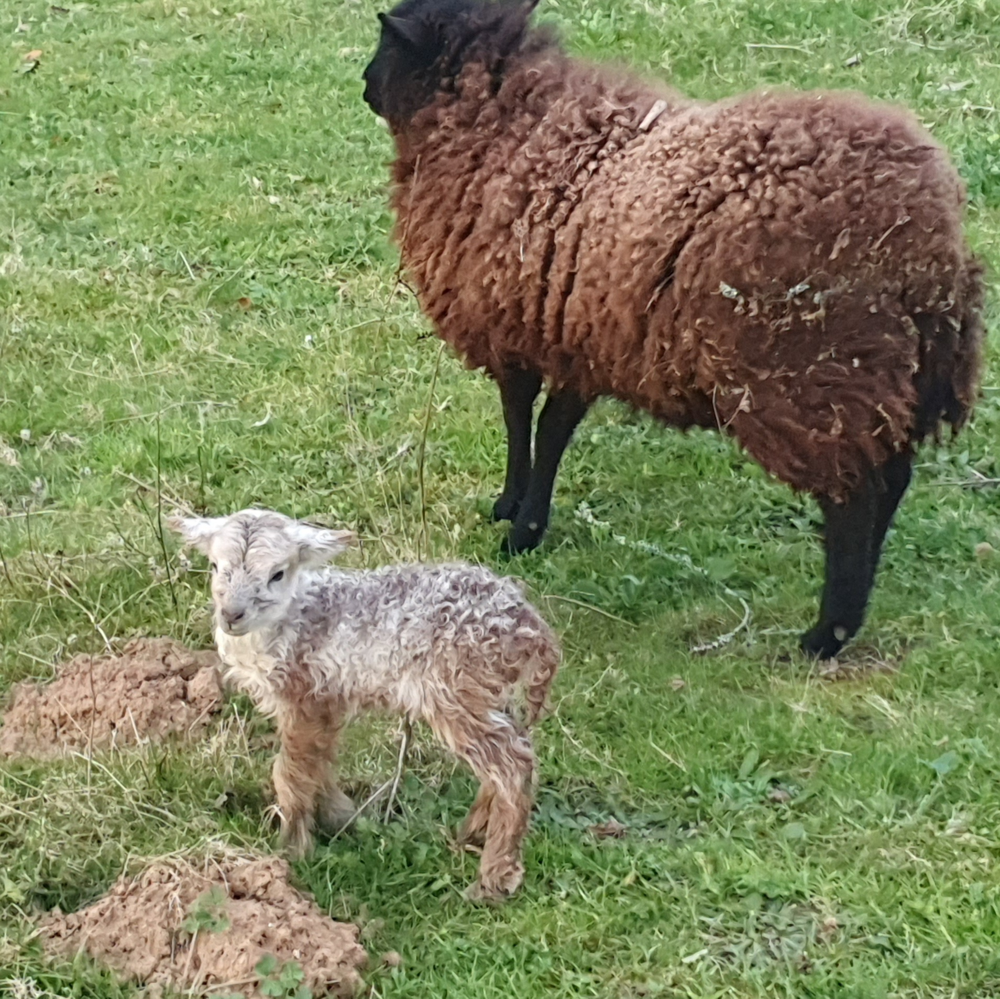
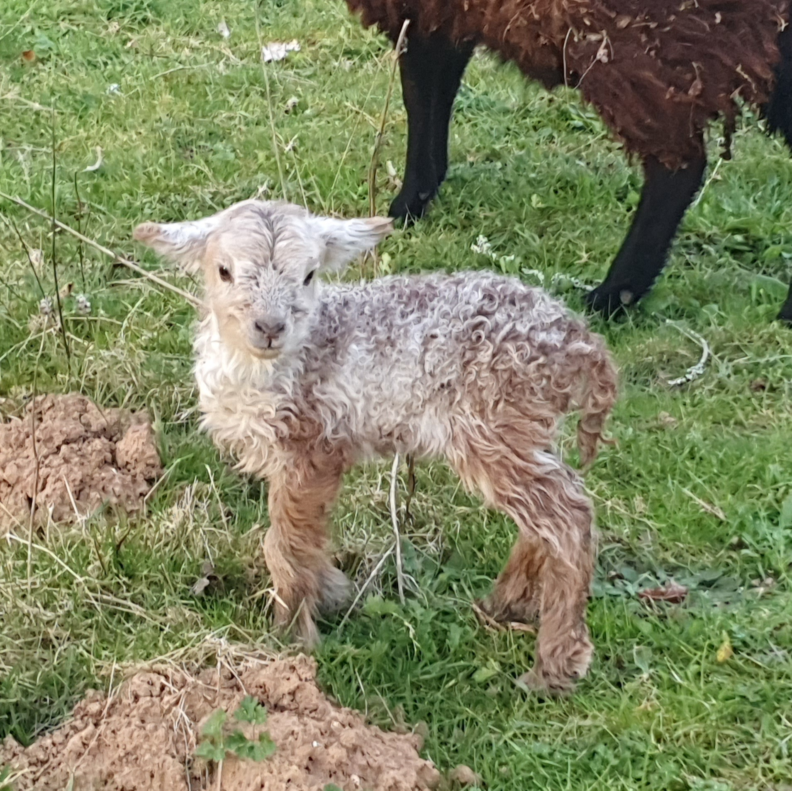
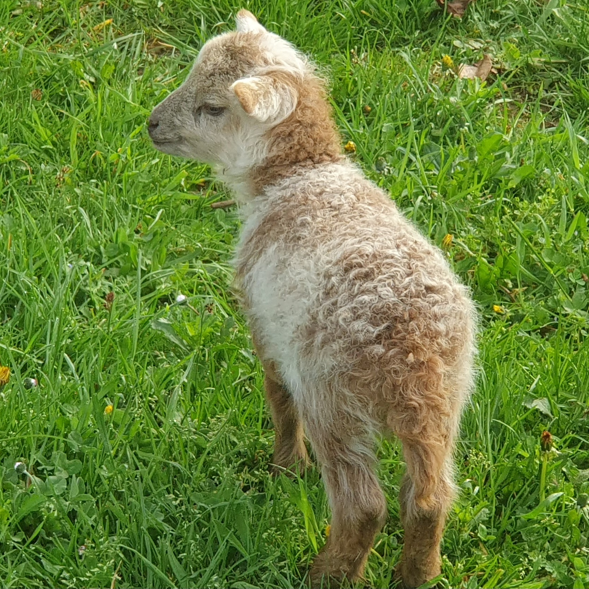
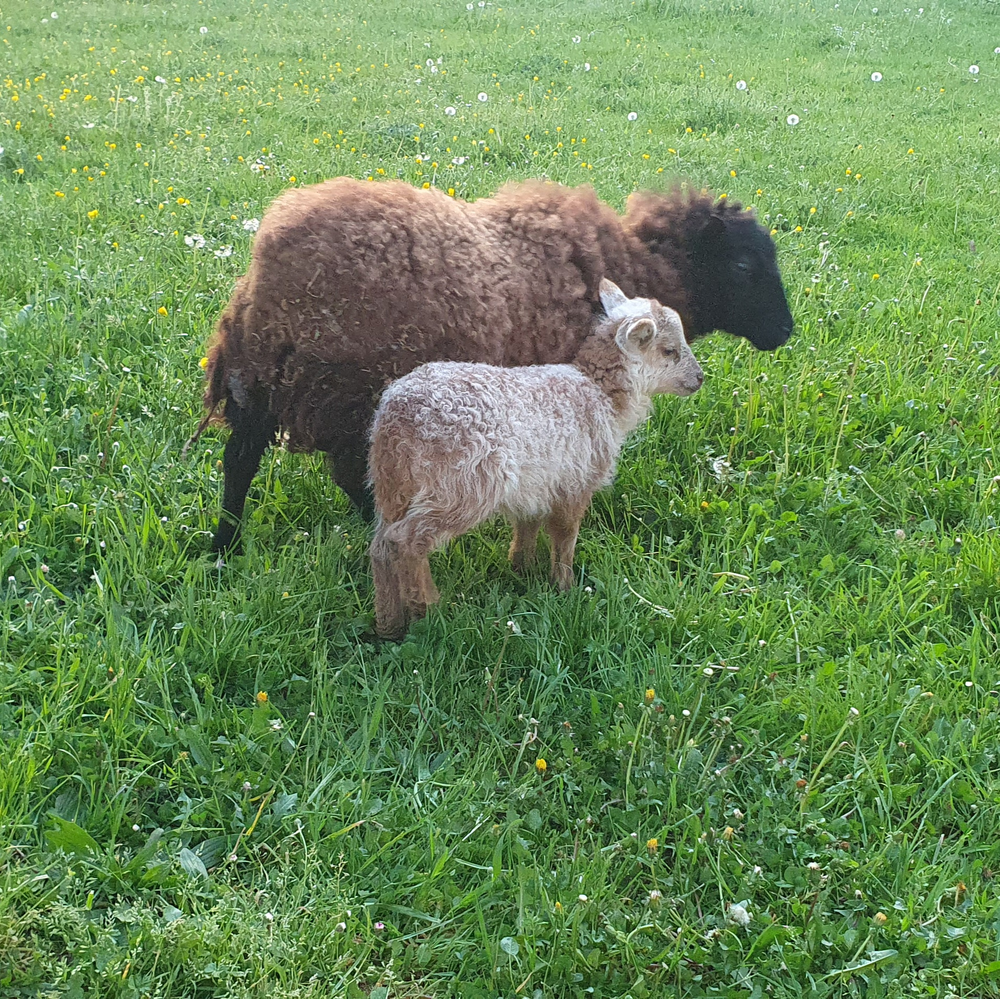
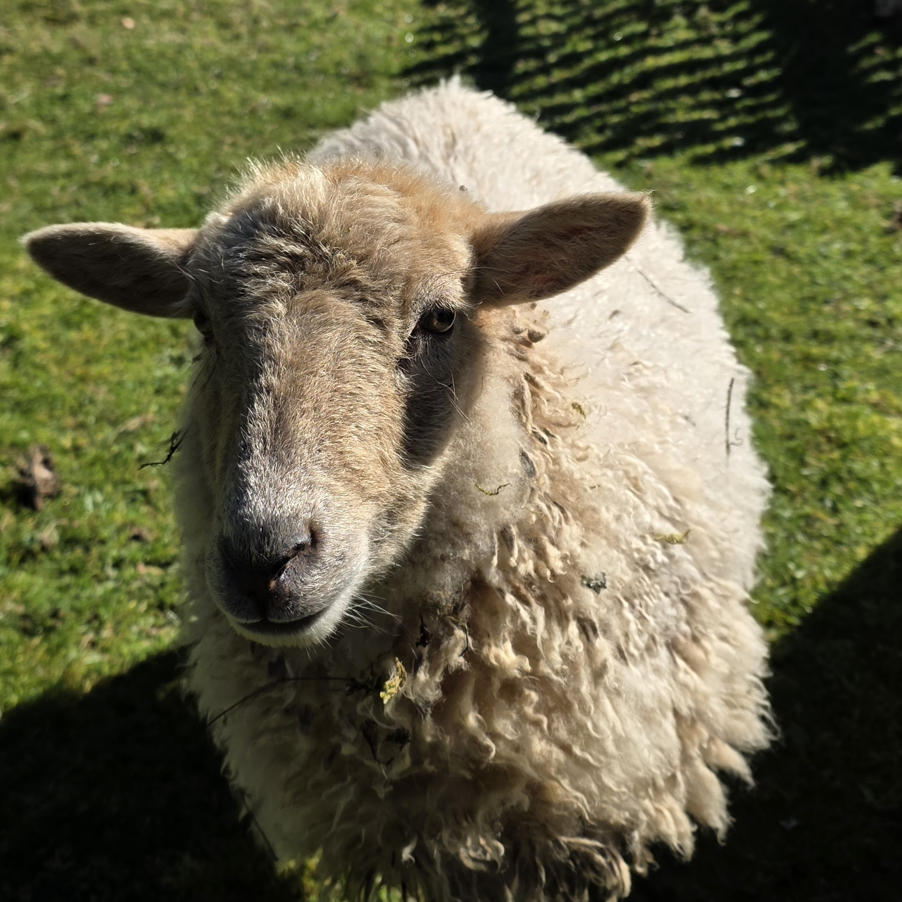
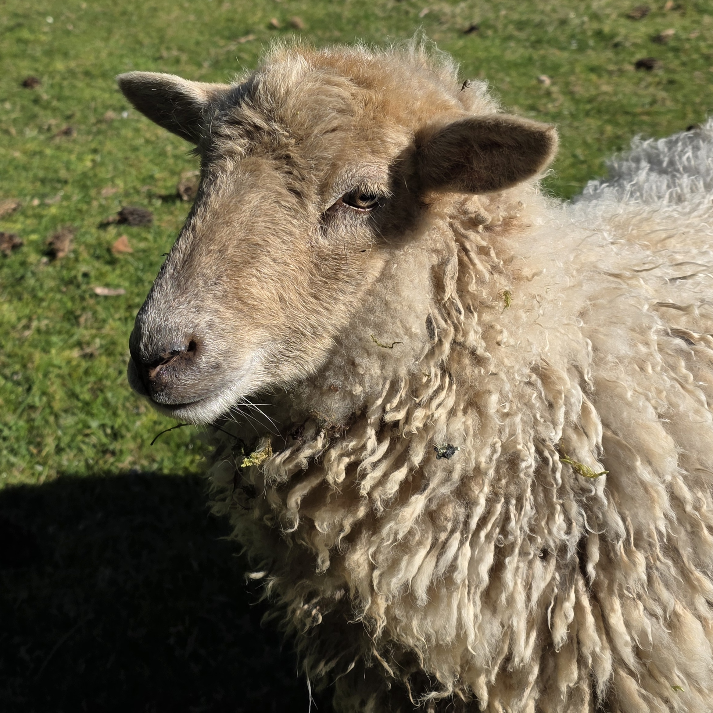

Race : Mouton d’Ouessant
Sexe : Femelle
Née le : 20/03/2025
Parents : Mouton (père) et Éclipse (mère)
Statut : Première naissance côté moutons
Pralinée est la fille de Mouton et Éclipse. Elle a été gardée à la ferme car elle est la première née du côté des moutons. Mais aussi pour une raison essentielle : permettre à Éclipse de ne pas rester seule. Comme pour Oréo avec Bounty, cela lui apporte une présence rassurante au quotidien. Car il ne faut pas oublier que les moutons sont des animaux grégaires, qui ont besoin de vivre en groupe.
Contrairement à sa mère, Pralinée est un véritable pot de colle ! Très proche de l’humain, elle recherche constamment le contact et la présence. Elle est douce, curieuse et toujours partante pour venir voir ce qu’il se passe.
Pralinée est tellement proche de nous que lorsqu’on entre dans le parc, elle accourt immédiatement. Et pas question de garder ses distances ! Elle nous suit de si près qu’elle finit régulièrement… par nous marcher sur les talons 😄 Un vrai petit pot de colle sur pattes !
Avec un prénom comme Pralinée, difficile de ne pas penser à une douceur sucrée… Encore une petite note gourmande qui s’inscrit parfaitement dans l’univers de la ferme !





